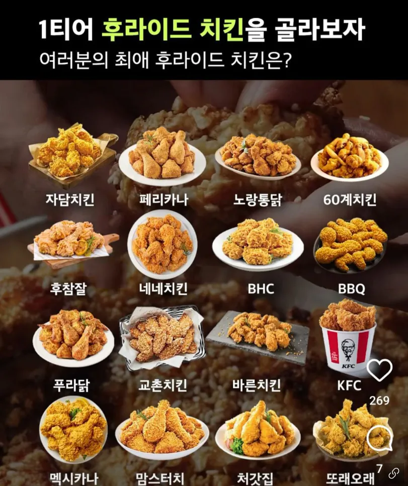

후라이드-황올
양념-청양산고추치킨
자극적인거 땡길땐-맵슐랭
시즈닝-뿌링클
간장-허니콤보
kfc오리지날
페리카나
가마치 ㅇㄷ??
가마치는 너무 기름져...
의정부법원 최진사
후라이드는 황올 양념은 근본의 페리카나
핫후 황올 레드/간장콤보 고바삭 오리 돌아가면서 먹음
BBQ는 점바점있긴하지만 괜찮은곳은 식어도 맛있더라
bbq황올은 기름바뀌고 별로임
BBQ 점바점 있는거같긴한데 최근에 먹은 황올은 진짜맛있더라
다사랑 어디??
다사랑 탕수육치킨이 goat임
가격으로 ㅈㄴ욕하면서 결국은 황올 허니콤보 먹게되는듯
고를 시간에 쳐먹자..!!!!
뼈는 황올, 순살은 자담이지요